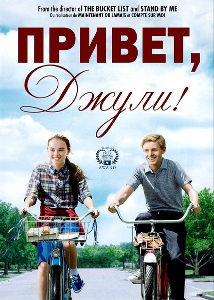

朱莉·贝克虔诚地相信三件事：树是圣洁的，特别是她最爱的梧桐树；她在后院里饲养的鸡下的蛋是最卫生的；以及总有一天她会和布莱斯·罗斯基接吻。二年级时在看到布莱斯的蓝眼睛那一瞬间，朱莉的心就被他击中了。不幸的是，布莱斯对她从来没有感觉。而且，他认为朱莉有点怪，怎么会有人把养鸡和坐在树下看成乐趣呢？
没想到，到了八年级，布莱斯开始觉得朱莉不同寻常的兴趣和对于家庭的自豪感使她显得很有魅力。而朱莉则开始觉得布莱斯漂亮的蓝眼睛也许和他本人一样，其实很空洞。毕竟，怎么会有人不把别人对树和鸡的感觉当回事呢？
本书是在网络获得极高赞誉的电影《怦然心动》的同名原著，描述了青春期中男孩女孩之间的有趣战争。

《Flipped》被改编为了一部极为成功的电影：
在2007年，当时60岁的美国导演罗勃-莱纳 以一部《遗愿清单》表达了他对人生的终极思考。而在3年后，他却骤然换了一个角度，以一部改编自文德琳.范.德拉安南小说的电影《怦然心动》，从在童年、青春时光时男孩女孩间的“战争”表达他对人成长的思考。

“我们为这本奇妙的小说，勇敢的女孩朱莉和它智慧而精妙的结局而心动。”——《芝加哥论坛报》
“一项带着嘲讽的性格研究，一场坚实与缥缈的浪漫爱情故事。——Booklist（美国图书馆协会书评网站）
“一位会令孩子们疯狂喜爱的魅力超群的女主角，两个叙述者之间富有吸引力的互动，一个能引发共鸣的结局，这本小说有着远超于构成它的文字的意义。”——《 出版人周刊》（星级评论）